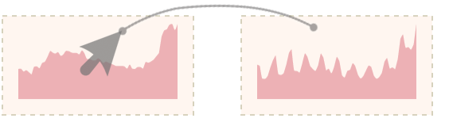

PieceStack Tutorial
For the detailed tutorial, please visit here.
Thumbnail Interactions

Merging
- Operation
Draga thumbnail onto another one - Merge two thumbnails, and the corresponding stacked graphs, into one.

Re-ordering
- Operation
Draga thumbnail to an interspace - Move the thumbnail and the corresponding stacked graph to a certain position.
Brushing
Brushing on a visual element provides users with basic information. Three levels of brushing available:

Layer Level
- Operation
Clickon a layer - Highlight all the segments that belong to the same layer over the entire period.
- Dismiss
Clickanywhere in the stacked graph

Cluster Level
- Operation
Shift + Clickon a cluster - Equivalent to brushing all layer segments included.
- Dismiss
Clickanywhere in the stacked graph
Aggregation Level
- Operation
Hovera time point - All the diamond glyphs along a time point are displayed at the corresponding point.
Selecting
Selecting helps to pinpoint aggregations at certain time points and compare their causes of construction.
- Correlation links Operation
Clickon a circle - Show all the correlation links of a selected time point.
- Sankey diagram Operation
Double Clickon another circle - Select additional time point(s) to construct a Sankey diagram.
Decomposing
Drag individual layers, clusters, or intersection flows in Sankey diagrams back and forth to construct multiple unique stacked graphs with any combination of interests.
- Operation
Draga layer, intersection flow or
Shift + Draga cluster to the Thumbnail View:- to an interspace to construct a new stacked graph at a certain position,
- to a Thumbnail to transfer the layers to an existing graph.
- Construct multiple stacked graphs with independently drawn glyphs.
- Circles' offset distances encode the differences with the average contribution of all sequences.